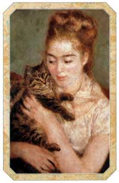

In biblioteca
Mi vestirò di perle
e metterò parole fra i capelli
perché il mio amore è nudo
e a volte ama il silenzio
Indosserò i respiri della notte
lasciando trasparire i miei segreti
fra incunaboli d'epoca
e vecchi manoscritti
E scriverò dei versi sul cuscino
per i giorni di vento e di tempesta
scompiglierò le perle e le parole
sopra il mio amore ancora addormentato
perché il suo sonno è lieve
e la sua mano poggia sul mio cuore
E al suo risveglio
forse potrò morire, forse potrò sognare
fra nuvole d'inchiostro colorato
perché il linguaggio nuovo è già segnato